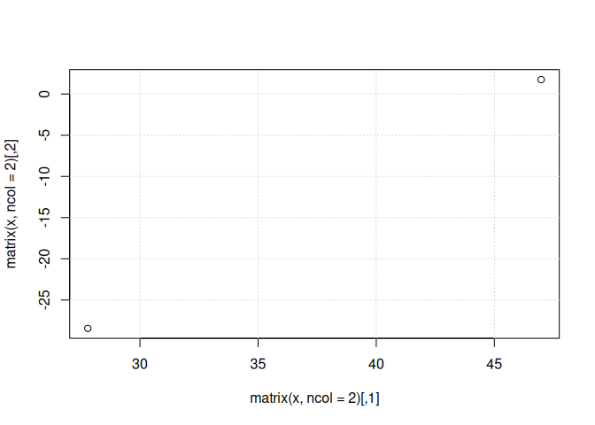
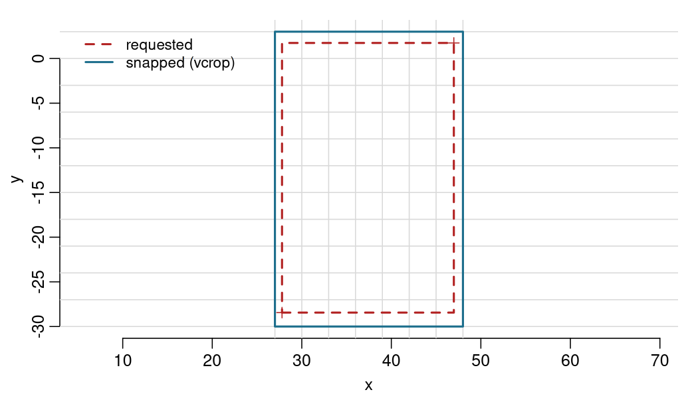
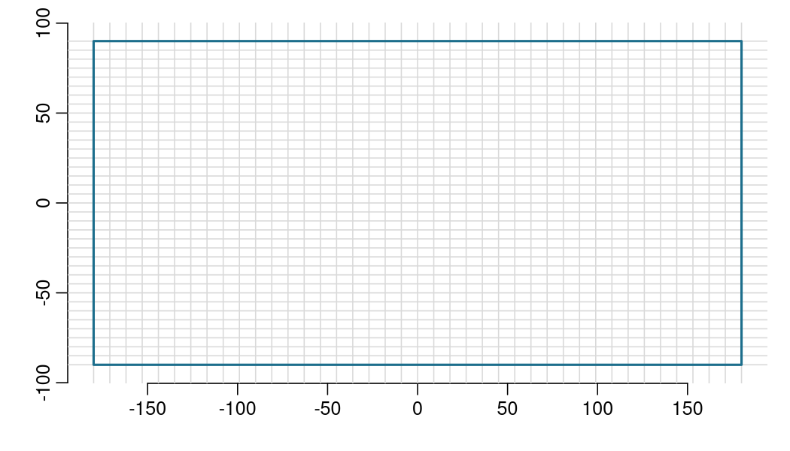
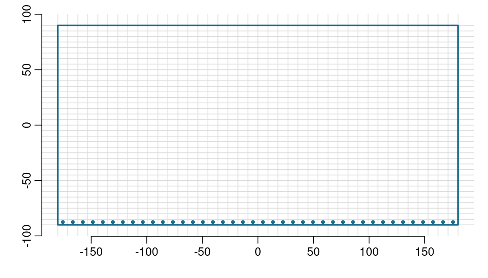
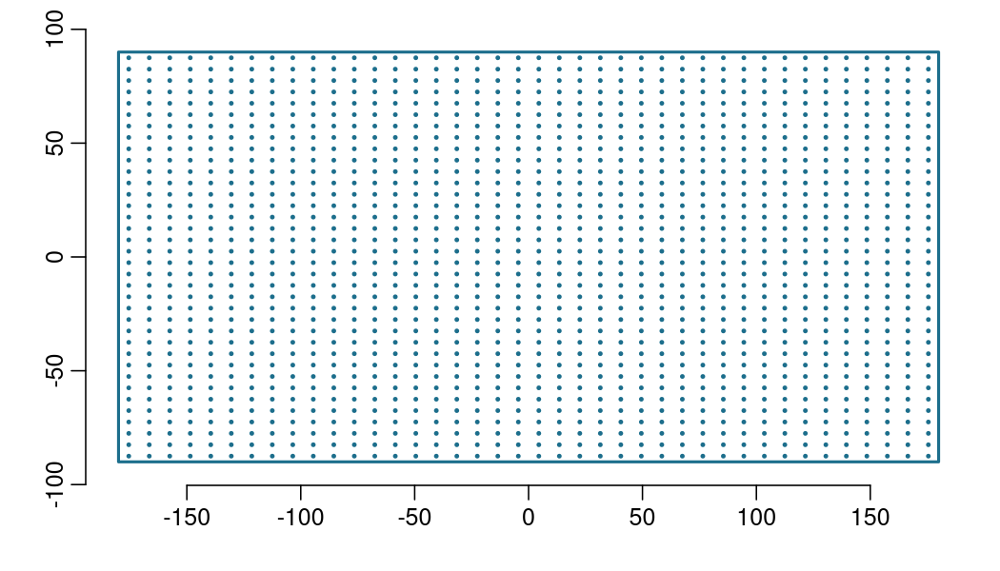
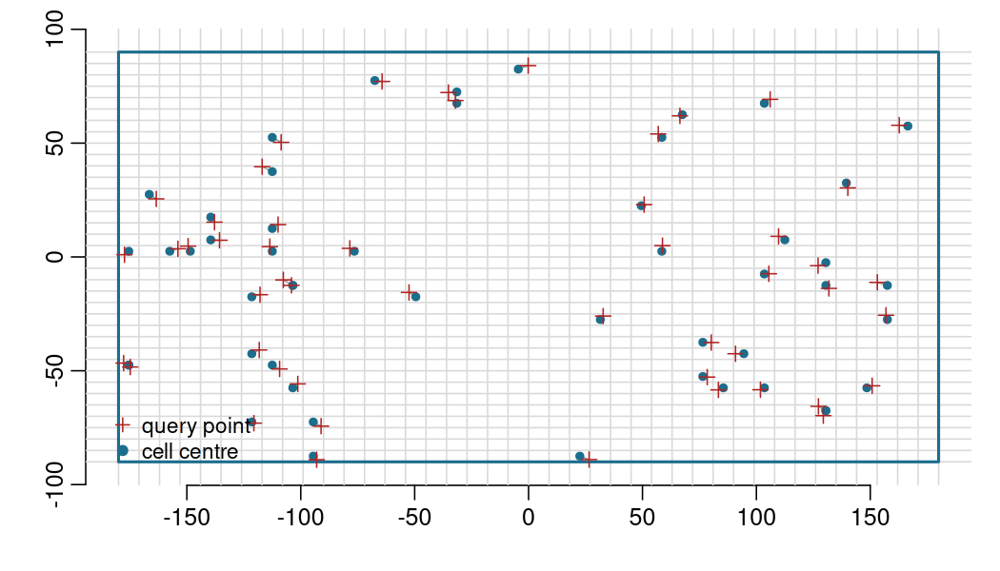

The goal of vaster is to provide grid logic without complication added by data and format details.
Installation
You can install vaster from r-universe:
install.packages("vaster", repos = c("https://hypertidy.r-universe.dev", "https://cran.r-project.org"))Or install the development version from GitHub:
# install.packages("pak")
pak::pak("hypertidy/vaster")Grid logic
Here are four numbers, that represent two positions in the plane.
On their own they are very unlikely to align on a raster grid, but they provide a starting point for a “region of interest”. Notice in this picture that the underlying discretization and the position of these points is unrelated, and can be arbitrary - but they are related in terms of describing approximately the same region. If we make our grid window too small we will miss part of the world that the points are in, you can see that we want to “snap out” at least one grid cell to the left and down, to the right and up.
library(vaster)
set.seed(1)
x <- c(sort(runif(2, -20, 160)), sort(runif(2, -80, 10)))
names(x) <- c("xmin", "xmax", "ymin", "ymax")
print(x)
#> xmin xmax ymin ymax
#> 27.791559 46.982302 -28.443197 1.738701
plot(matrix(x, ncol = 2))
grid()
This is where vaster comes in, tools to relate arbitrary point locations to an underlying grid.
vaster consists of a set of low-level functions for this relationship between point locations and grid elements.
The vcrop() function is a high-level function that uses these underlying tools. Imagine a grid that is 120x60 and includes the whole world in longlat, this is described by dimension (120x60) and by extent (-180, 180, -90, 90). With vcrop() we get exactly the right snapping for our points, identifying the exact extent we need to “snap out” that little bit as mentioned above. The discretization can be completely arbitrary, as it can be in geospatial packages.
## all we need is a extent and dimension, we want to align to that grid
v <- vcrop(x, c(120, 60), extent = c(-180, 180, -90, 90))
plot(NA, xlim = v$extent[1:2], ylim = v$extent[3:4], asp = "")
g_along <- function(x, n) seq(x[1], x[2], length.out = n + 1)
abline(v = v$extent[1:2], h = v$extent[3:4], lwd = 2)
abline(v = g_along(v$extent[1:2], v$dimension[1]), h = g_along(v$extent[3:4], v$dimension[2]), col = "grey")
## these points were used to crop the existing grid, they don't define its alignment
points(x[1:2], x[3:4], pch = "+")
That is the core of vaster - this is raster logic that exists in geospatial libraries and packages, but it has use on its own without any imagery, or grid data, or files or anything else. vaster was originally based on the abstract cell functions of the old raster, which relied on its internal format - these are now superseded by the terra package - but we don’t want to rely on its new format, or be subject to future changes so vaster has the logic separated from other tooling.
Most functions in vaster include arguments that ‘dimension’, and ‘extent’ (when needed) in that order.
We use the concept of “extent” which is xmin,xmax,ymin,ymax which is exactly the same as the concept of “bounding box (bbox)” which is xmin,ymin,xmax,ymax: the same thing in a different order.
Another example
A grid of the world in 9x5 degree squares, we only need the dimension and extent to get the corners in x, y.
With plot_extent() we have a very simple way to plot a rectangular region with one argument.
ex <- c(-180, 180, -90, 90)
dm <- c(40, 36)
plot_extent(ex, lwd = 5, border = "firebrick")
abline(v = x_corner(dm, ex), h = y_corner(dm, ex))
With x_corner(), y_corner(), x_centre(), and y_centre() we need only those six numbers, extent and dimension to get the corner and cell centre positions.
Now add the centre points.
plot_extent(ex)
points(x_centre(dm, ex), rep(y_centre(dm, ex)[1], length.out = dm[1]))
We only get the margins from x_corner/x_centre so we go to a cell based function, xy_from_cell() returns any centre position indexed by its cell number (cell numbers are 1-based and traverse from topleft to the right, then down by row - this is the same as in raster/terra and is the orientation used by most geospatial tools).
## how many cells?
cells <- seq_len(prod(dm))
plot_extent(ex)
points(xy_from_cell(dm, ex, cells))
Other functions return cells, here we have another kind of “snap” operation, which cell does the point fall it (or which cell centre is it closest to).
xy <- cbind(runif(50, -180, 180), runif(50, -90, 90))
cells <- cell_from_xy(dm, ex, xy)
plot_extent(ex)
points(xy_from_cell(dm, ex, cells), col = "red")
points(xy, pch = "+")
Code of Conduct
Please note that the vaster project is released with a Contributor Code of Conduct. By contributing to this project, you agree to abide by its terms.